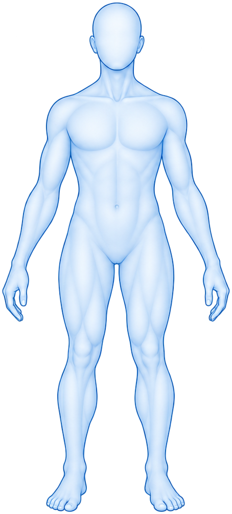
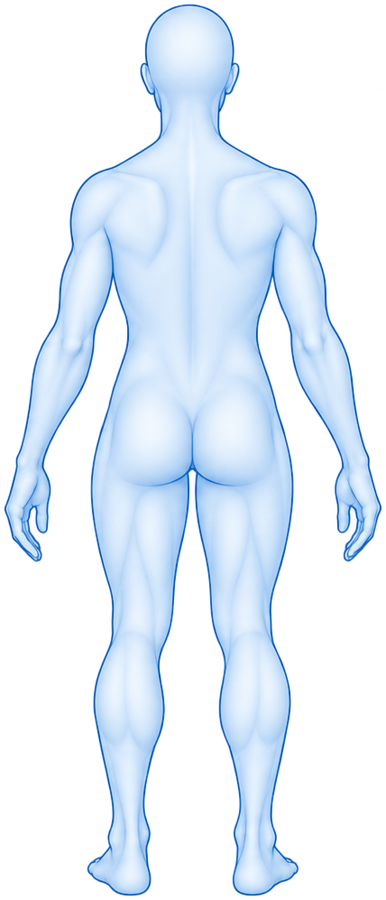

{{ pc.label }}
{{ pc.desc }}
O OrientaDor te ajuda a entender melhor sua dor e indica os próximos passos, direcionando você aos profissionais e cuidados mais adequados.
Para qualquer pessoa que deseja entender melhor sua dor e saber quais podem ser os próximos passos.
O OrientaDor não substitui uma avaliação profissional. Ele organiza o que você relata e ajuda a entender qual pode ser o próximo passo.
Em poucos passos você recebe uma orientação inicial para entender sua dor e saber quais podem ser os próximos passos.
Não. O OrientaDor é educativo: organiza o que você relata e ajuda a entender qual pode ser o próximo passo, mas não faz diagnóstico nem indica tratamento.
Sim, é gratuito e não é preciso criar conta para fazer a avaliação.
Profissionais de áreas relacionadas ao que você relatou, como ortopedia, fisioterapia ou clínica geral. A ordem nunca é definida por pagamento.
Nesta versão, as avaliações que você salva ficam apenas neste navegador, no seu próprio dispositivo. Não pedimos CPF, endereço ou telefone.
Cerca de 3 minutos. É uma pergunta por tela, e você pode voltar sem perder o que já respondeu.
Suas respostas são confidenciais e ficam no seu dispositivo.
Como tratamos suas informações e quais são as regras de uso do OrientaDor, explicados de forma simples.
Suas respostas podem conter informações relacionadas à sua saúde. Por isso, buscamos coletar apenas o necessário para oferecer a experiência.
O OrientaDor é uma ferramenta educativa de organização de informações relatadas pela própria pessoa. Ele não realiza diagnóstico, não prescreve tratamento e não estabelece relação de atendimento em saúde.
Em situações de urgência, procure atendimento presencial imediatamente ou ligue 192.
Toque na articulação sobre o corpo — ou escolha na lista. Nesta versão, a avaliação completa está disponível para o joelho.
{{ outOfScope }} estará disponível em breve. Por enquanto, a jornada completa existe para o joelho.


Dor muito intensa, falta de ar ou dor no peito? Procure atendimento imediatamente.
Fale como numa conversa. Nós organizamos o que você contar e só perguntamos o que faltar.
Responda à pergunta do navegador, que aparece perto da barra de endereço.
Não encontramos um microfone disponível neste dispositivo. Você pode escrever o que sente no campo abaixo.
{{ talkInterim }}
{{ talkError }}
Exemplo: “Meu joelho direito dói há duas semanas, nota 6. Piora quando subo escada, está um pouco inchado e não caí.”
Não conseguimos identificar respostas no que você contou. Tudo bem — seguimos com as perguntas, uma de cada vez.
“{{ talkText }}”
{{ talkMissingLabel }}
Identificação por palavras-chave · DEMO, regras não validadas. Suas respostas passam pelos mesmos sinais de alerta do questionário.
{{ qHelp }}
A leitura em voz alta não está disponível neste dispositivo. Você pode continuar lendo na tela.
{{ voiceError }}
Algumas das suas respostas indicam que pode ser importante procurar avaliação profissional antes de seguir.
Isto não é um diagnóstico. É apenas um sinal de que uma avaliação profissional pode ser importante agora.
Conheça os profissionais que podem te ajudar com as suas dores.
Tente outra cidade, especialidade ou modalidade.
{{ proSpecialty }}
{{ proAbout }}
{{ proQuote }}
{{ proSpecialty }}
Aqui ficam as avaliações que você salvou. São apenas os dados que você mesmo registrou — sem interpretação clínica.
Depois de concluir uma avaliação, você pode salvá-la para acompanhar como a dor muda com o tempo.